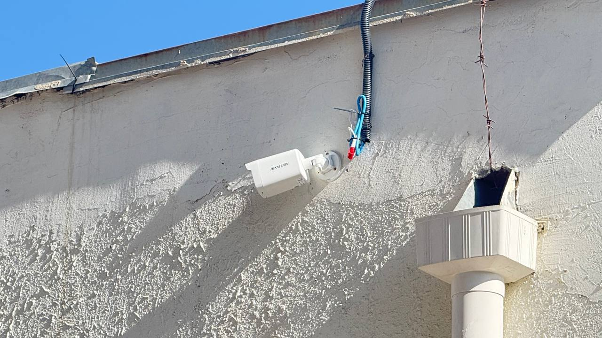
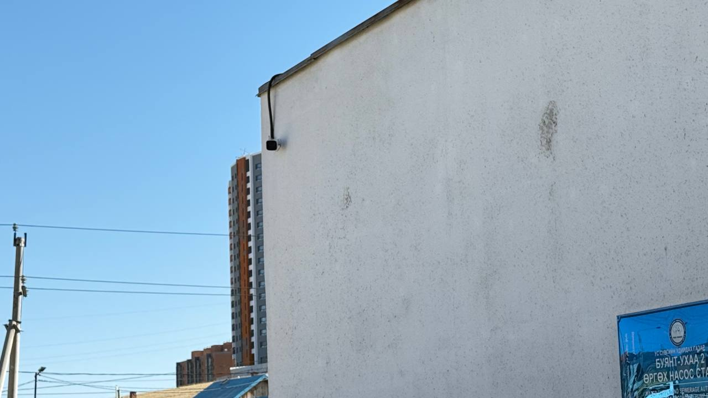
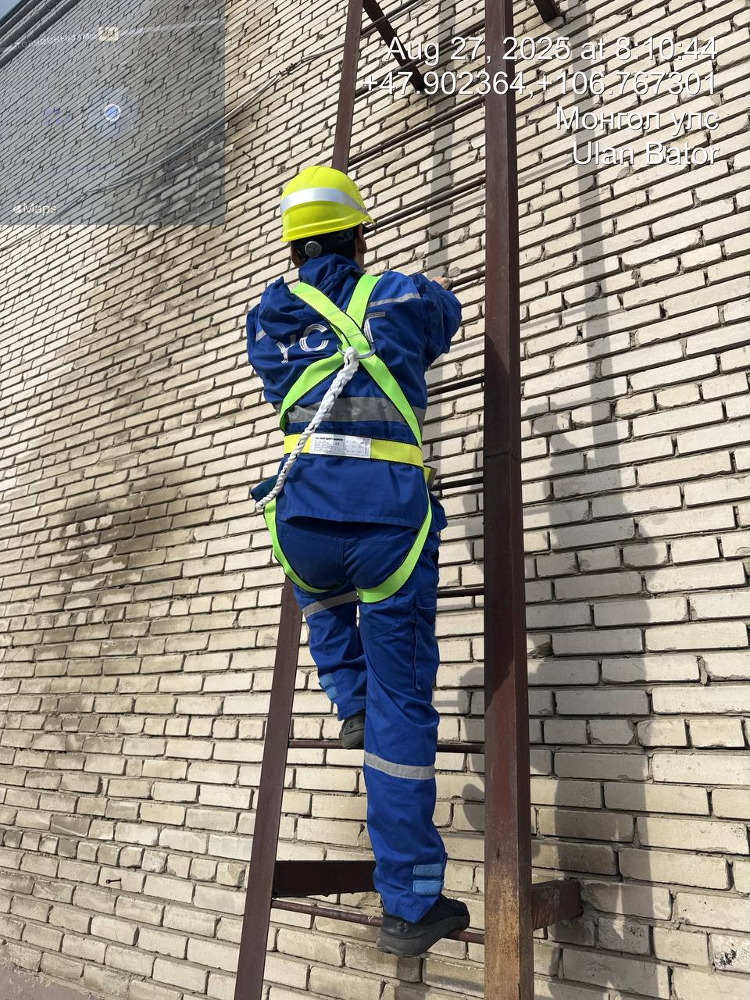
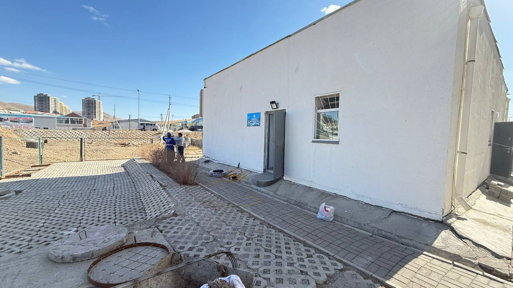
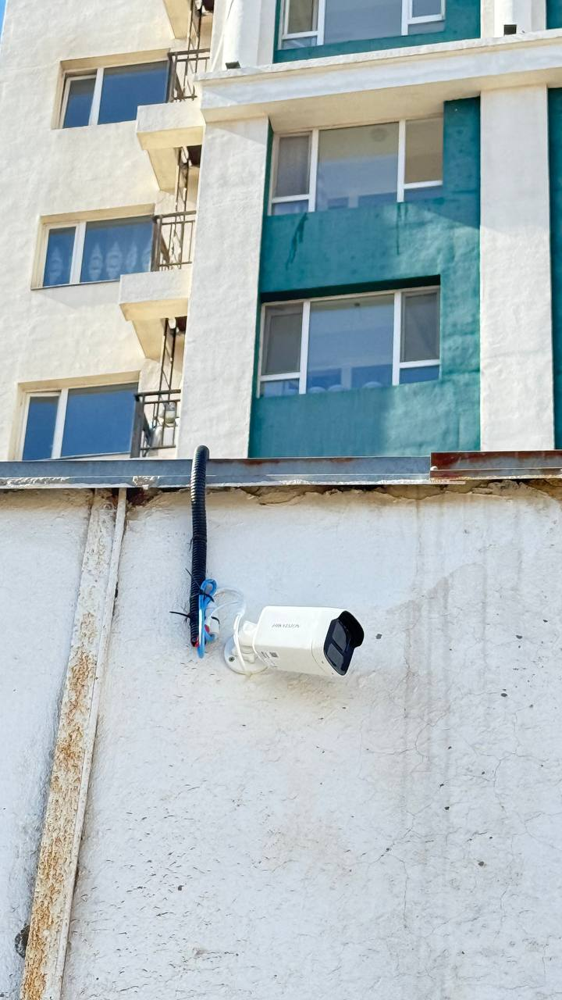
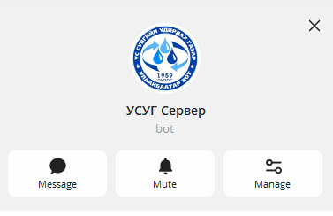
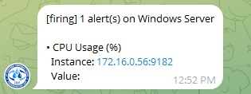
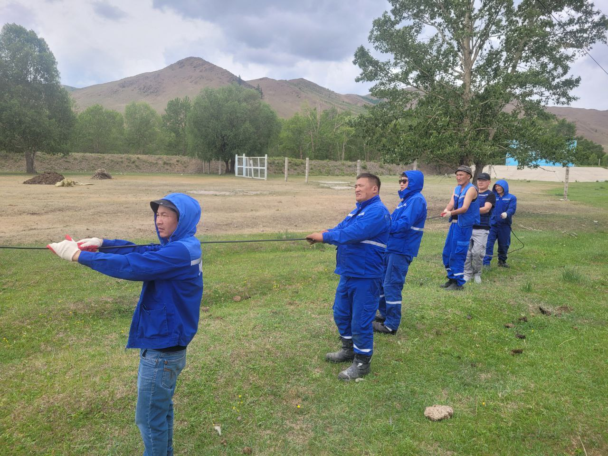
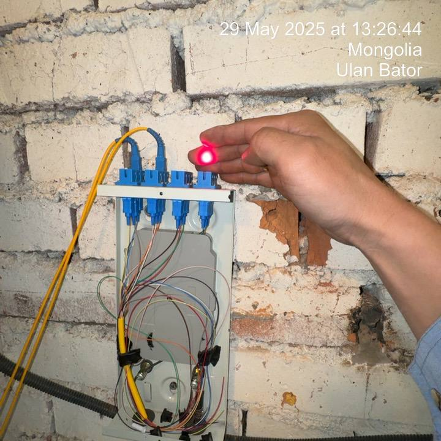
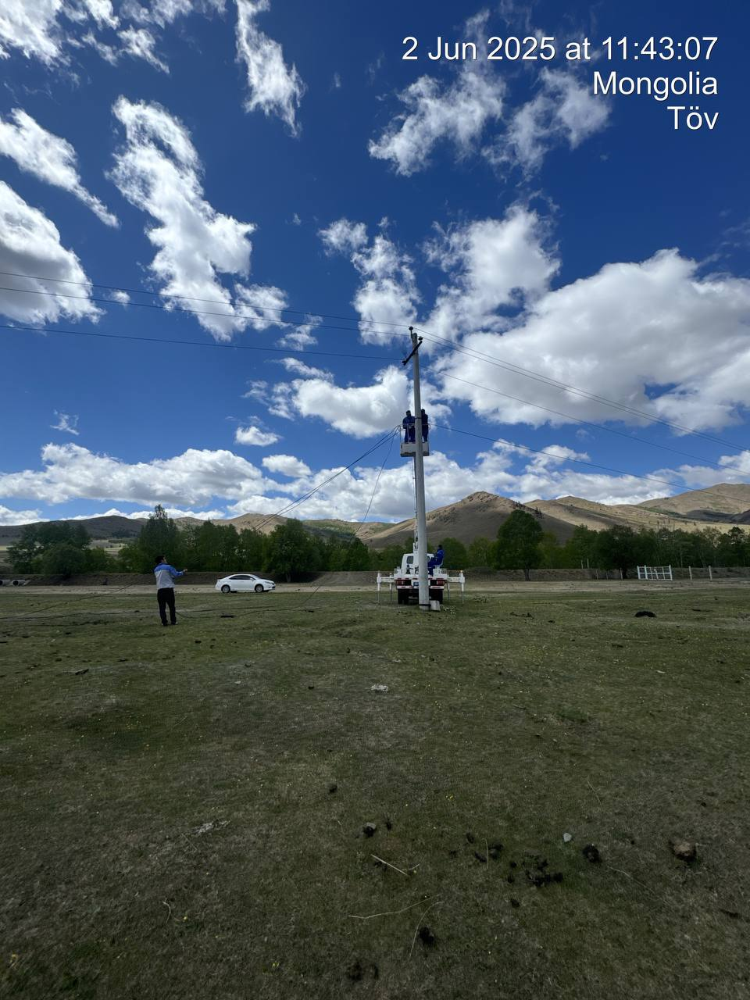

📡 Телеметр
Телеметр хяналтын КТМС цэгт цахилгаан хаалт суурилуулж, алсын удирдлагатай болгосон. Цахилгаан тэжээл татах боломжгүй цэгүүдэд нарны эрчим хүч суурилуулж хэвийн ажиллагаанд оруулсан.
Ажлын явцын зургууд
 -->
-->


🚰 Цэвэр усны тоног төхөөрөмжийн засварын хэсэг
Ажлын явцын зургууд


♻️ Бохир усны тоног төхөөрөмжийн засварын хэсэг
Яармаг 1, 2 бохир усны өргөх насос станцыг дотоод нөөц бололцоогоо ашиглаж складын үлдэгдлээр хяналтын камержуулсан.
Ажлын явцын зургууд






📡 Программ хангамж
Сервер болон программ хангамжуудын хэвийн найдвартай үйл ажиллагааг хангах зорилгоор нээлттэй эхийн сан үүсгэн хэрэгжүүлж, серверүүдийн үзүүлэлтүүдийг хянах боломжтой болсон. Telegram-н чатбот-ийг ашиглан хэрэглээ нь ихэссэн үед дохиолол илгээх холболтыг хийж гүйцэтгэсэн.
Ажлын явцын зургууд



📡 Шилэн кабель
Гачууртын эх үүсвэрийн алсын удирдлагын системийг Хяналт удирдлагын төвд шууд холбох боломжгүй байсан тул шинээр шилэн кабель татах шаардлага үүссэн. Харин одоогийн сүлжээний бүтцийг судалж, хамгийн бага зардалтай, хялбар холболтын шийдлийг хэрэгжүүлсэн.
Ажлын явцын зургууд



.jpg)
📍 GPS
Авто баазын тээврийн хэрэгслүүдийн түлш хэмжигч төхөөрөмжөөс, байршил тогтоох төхөөрөмж рүү холбогдсон тэжээлийн болон сигналын кабелийн монтажийг уян хар хоолойгоор явуулсан байгаа боловч засвар үйлчилгээ хийх үеэр кабин сөхөж буулгах, холболт үүсгэх гэх мэт бусад механик хүчин зүйлсээс хамаарч тусгаарлалт муудаж тасарч, гэмтэх тохиолдолд үүсдэг. Үүнээс сэргийлж туршилтаар 21-37УНТ улсын дугаартай тээврийн хэрэгслийн кабелийн монтажийг илүү даац, тэсвэр сайтай PVC хоолойнд хийж татсан.
Ажлын явцын зургууд